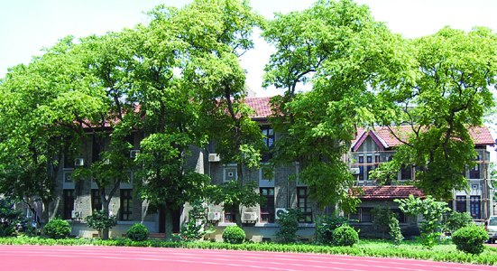
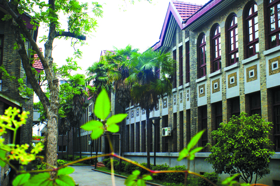

嘉兴市文物保护网 · 市级文物保护单位 · 2014-06-19 · 原文


辅成小学校舍楼位于嘉兴市南湖区建设街道瓶山社区少年北路辅成小学内，建于民国二十六年（1937），总占地面积2236平方米，包含教学楼和行政楼。教学楼坐北朝南，砖木结构，通面阔47米，通进深43米，系二层四开间楼房。楼北延伸出一个大礼堂和2个教室，平面呈“山”字型，屋顶铺设洋瓦，墙体用青砖砌筑，门窗为拱形，属中西合璧式的建筑风格。此楼原被嘉兴高专、一中用作宿舍楼，后被实验小学、辅成小学用作教室；行政楼坐北朝南，砖木结构，通面阔29.48米，通进深7.3米，系二层二开间楼房，屋顶铺设洋瓦，墙体用青砖砌筑。此楼原为宿舍楼，后被实验小学、辅成小学用作行政办公楼。辅成小学在嘉兴教育界有较大影响，建筑具有明显的西式风格，对于研究嘉兴近代教育史和建筑史，均有较高的历史和科学价值。2000年公布为嘉兴市级文物保护单位。